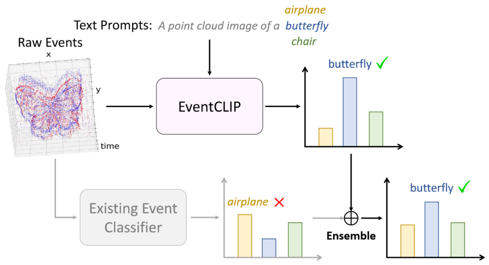
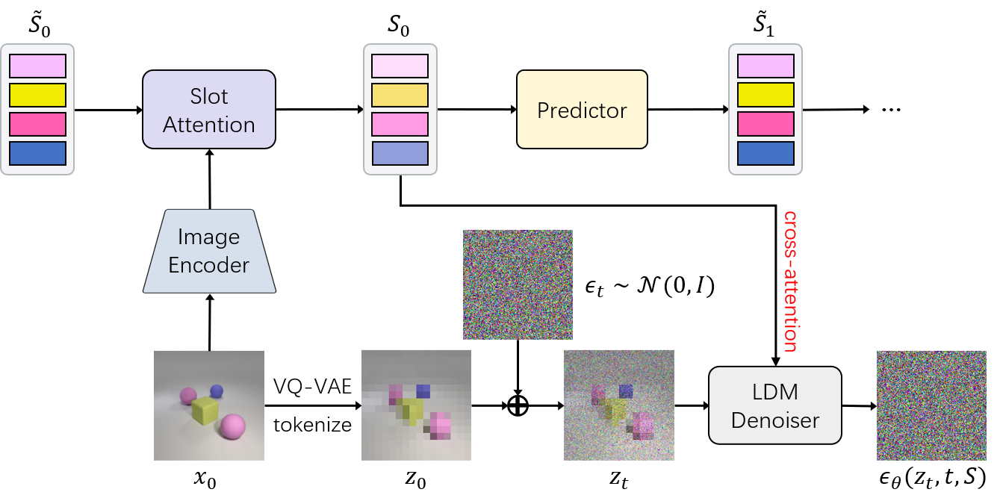
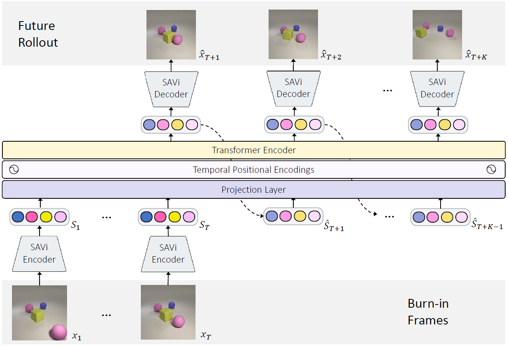

|
|
Ziyi Wu (吴紫屹)
Ph.D. Student University of Toronto Email: ziyiwu [at] cs.toronto.edu CV • Google Scholar • GitHub • Twitter |

About
|
I am a third-year PhD student in Toronto Intelligent Systems Lab (TISL) at the University of Toronto, supervised by Prof. Igor Gilitschenski.
I had the fortune to work with Prof. Animesh Garg, Prof. Andrea Tagliasacchi and Dr. Thomas Kipf.
I am affiliated with the Vector Institute.
|
News
- NEW [Sept, 2023] I will intern at Google mentored by Dr. Thomas Kipf starting this Nov. See you at Mountain View!
- NEW [Sept, 2023] One paper accepted by NeurIPS 2023!
- [Feb, 2023] Two invited talk on SlotFormer in Prof. Kun Zhang's group and Neuroinformatics Group. Thanks Andrew and Guangyi for inviting me!
- [Jan, 2023] One paper accepted by ICLR 2023!
- [Oct, 2022] SlotFormer won 1st place at ECCV 2022 MVCS Workshop CLEVRER Challenge!
- [Sept, 2022] One paper accepted by NeurIPS 2022 Datasets and Benchmarks Track!
Research
 |
EventCLIP: Adapting CLIP for Event-based Object Recognition |
 |
SlotDiffusion: Object-Centric Generative Modeling with Diffusion Models |
 |
SlotFormer: Unsupervised Visual Dynamics Simulation with Object-Centric Models |
|
Breaking Bad: A Dataset for Geometric Fracture and Reassembly |
|
Instance Similarity Learning for Unsupervised Feature Representation |
|
Learning Efficient Binarized Object Detectors with Information Compression |
|
BiDet: An Efficient Binarized Object Detector |


Workshop & Preprints
|
IF-Defense: 3D Adversarial Point Cloud Defense via Implicit Function based Restoration |
|
A Cascade Regression Model for Anatomical Landmark Detection |
|
CFUN: Combining Faster R-CNN and U-net Network for Efficient Whole Heart Segmentation |


Academic Services
|
Journal reviewer: T-PAMI; ISRR; |
Teaching
|
Teaching Assistant, CSC 478: Robotics Perception23 Winter |
Selected Awards
- 1st place in CLEVRER track at MVCS Challenge (ECCV 2022 Workshop), 2022.
- Outstanding Graduates (Beijing, Tsinghua University & Dept. of Automation), 2021.
- SenseTime Undergraduate Scholarship for AI Research, 2020.
- Xiaomi Scholarship, Tsinghua University, 2020.
- Fang Chongzhi Scholarship, Tsinghua University, 2019.
- Chinese National Scholarship, 2018.
- Spark Program Membership, Tsinghua University.
Miscellaneous
|
I like basketball and soccer. My favorite players are LeBron James and Lionel Messi (G.O.A.T.!).
|
Ziyi Wu Last updated: Oct.27, 2023